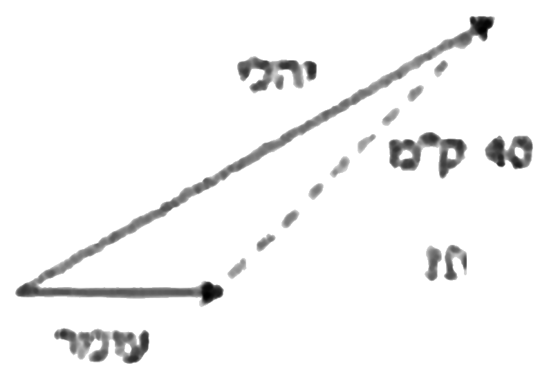
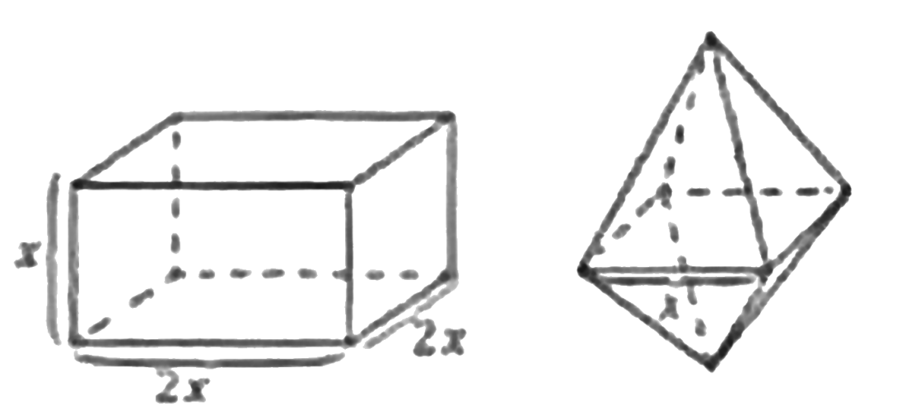

יהלי ועומר יצאו מאותה הנקודה ונסעו לשני כיוונים שונים. שניהם החלו את נסיעתם באותו הזמן ונסעו כל אחד במהירות קבועה משלו. מהירותו של יהלי גדולה פי 3 ממהירותו של עומר. כעבור שעתיים המרחק ביניהם היה 40 ק"מ.
איזו מהמהירויות הבאות יכולה להיות מהירותו של עומר (בקמ"ש)?
לכל שני מספרים שונים x ו־y הוגדרה הפעולה $ כך: x $ y = y1 + x
איזה מהביטויים הבאים הוא הקטן ביותר?
נתון: a ו־b הם מספרים ראשוניים השונים זה מזה. x = a · b
כמה מחלקים שונים יש ל־x³?
אחת ל־3.5 דקות מתקן מים ביתי מרתיח מחדש את המים החמים שבו. תהליך ההרתחה אורך דקה וחצי, וכך חוזר חלילה במשך כל שעות היום. עידו מגיע למתקן המים בביתו בנקודת זמן אקראית במהלך היום.
מה הסיכוי שבאותו הרגע מתקן המים בדיוק מרתיח את המים החמים שבו?
⚠ השברים הקטנים נקראו בקירוב.
נתון: a, b ו־c הם מספרים טבעיים. a = 8b , a = 3c
איזה מהערכים הבאים יכול להיות ערכו של a?
השעון של ניר מאחר: בכל 5 דקות שחולפות הוא מתקדם 4 דקות. בשעה 12:00 כיוון ניר את שעונו לשעה הנכונה. כעבור כמה זמן (בשעות) יראה השעון שוב בשעה שלמה⚠?
בסרטוט שלפניכם שני גופים. תיבה וגוף הבנוי משתי פירמידות זהות בעלות בסיס משותף בצורת ריבוע כך שגובה כל אחת מהן הוא x.
בהסתמך על נתונים אלו ונתוני הסרטוט – נפח התיבהנפח שתי הפירמידות = ?

נתון: a³ < a < 0
איזה מהביטויים הבאים אינו בהכרח חיובי?
בסנדלריה עובדים 24 סנדלרים. בעל הסנדלרייה רכש מכונה שהספקה שווה להספק של 4 סנדלרים, וכדי להפעיל אותה דרוש סנדלר אחד.
אם מספר הסנדלרים הכולל לא השתנה, פי כמה גדל ההספק של הסנדלרייה?
נתון: 0 < |a| < 1 , b = a²
מה מהבאים נכון בהכרח?